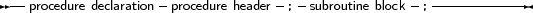
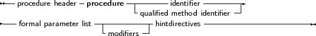
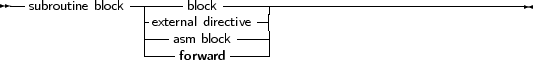

A procedure declaration defines an identifier and associates it with a block of code. The procedure can then be called with a procedure statement.
_________________________________________________________________________________________________________Procedure declaration



___________________________________________________________________
See section 11.4, page 433 for the list of parameters. A procedure declaration that is followed by a block implements the action of the procedure in that block. The following is a valid procedure :
Procedure DoSomething (Para : String);
begin Writeln (’Got parameter : ’,Para); Writeln (’Parameter in upper case : ’,Upper(Para)); end; |
Note that it is possible that a procedure calls itself.